Detaillierte Vorstellung der Microsoft PowerToys
 Inhaltsverzeichnis
Inhaltsverzeichnis
- Installation der PowerToys (Vorstellung 3 verschiedener Wege)
- Erste Schritte
- Allgemeine Einstellungen
- Der neue Schnellzugriff
- Immer im Vordergrund: Fokussiert arbeiten
- Aufwachen: Lasse den Bildschirm eingeschaltet
- Farbwähler: Toll für Künster und Entwickler
- FancyZones: Multitasking leicht gemacht
- File Locksmith: Kein Problem mehr beim Löschen von Dateien
- Datei-Explorer-Add-Ons: Dateivorschau leicht gemacht
- Hostdatei-Editor: Die Hostsdatei bequem und einfach bearbeiten
- Bildgrößenänderung: Ganz einfach die Größe von Bildern ändern
- Tastatur-Manager: Tastenkombinationen nach den eigenen Wünschen anpassen
- Mausdientprogramme: 4 hilreiche Tools
- Als Nur-Text einfügen: Nervige Formatierungen in Dokumenten beseitigen
- PowerRename: Mehrere Dateien auf einmal umbenennen
- PowerToys Run: Schnell Aktionen starten
- Schnelle Akzentuierung: Ganz einfach Akzentzeichen einfügen
- Registrierungsvorschau: Registry-Dateien einfach anzeigen und bearbeiten
- Bildschirmlineal: Ganz einfach Elemente ausmessen
- Tastenkombinationsübersicht: Alle Windows-Tastenkombinationen anzeigen
- Textextraktor: Text von beliebiger Stelle kopieren
- Videokonferenz-Stummschaltung: Mikrofon und Kamera per Tastenkombination systemweit stummschalten
Installation der PowerToys (Vorstellung 3 verschiedener Wege)
- Betriebssystem: Windows 11 (alle Versionen) oder Windows 10 v2004 (19041) oder neuer
- Systemarchitektur: x64 oder Arm64
Das Installationsprogramm installiert nicht nur die PowerToys selbst, sondern auch verschiedene Runtimes:
- .NET 6.0.8 Desktop Runtime oder eine höhere 6.0.x-Runtime
- Microsoft Edge WebView2 Runtime-Bootstrapper (installiert immer die neueste verfügbare Version)
- Installationsprogramm für Microsoft Visual C++ Redistributable (installiert immer die neueste verfügbare Version)
a) Microsoft Store
- Öffne den Microsoft Store.
- Gib in das Suchfeld "powertoys" ein. Klicke dann auf den Eintrag "Microsoft PowerToys".
- Klicke nun auf den Button "Installieren" und warte bis der Prozess abgeschlossen ist.
b) WinGet (Komandozeile)
- Öffne die Komandozeile deiner Wahl
- Gib dort dann folgendes ohne die Anführungszeichen ein: "winget install Microsoft.PowerToys -s winget"
- Das Programm wird jetzt auf deinem Computer installiert.
c) GitHub
- Öffne das GitHub-Repository, welches du hier findest.
- Scrolle nun runter, bis du die Überschrift "Installing and running Microsoft PowerToys" findest. Dort gibt es wiederum einen Abschnitt "Via GitHub with EXE [Recommended]". Dort klickst du in der Regel auf den blauen Schriftzug "PowerToysSetup-0.??.?-x64.exe" aus. Wenn du einen Arm64-Prozessor besitzt, wähst du stattdessen den Schriftzug "PowerToysSetup-0.??-?-arm64.exe" aus. Die Fragezeichen stehen für Nummern, welche varrieren können. Das ist die Versionsnummer.
- Klicke dann auf die Setup-Datei und folge den Anweisungen innerhalb des Setups. Die Installation funktioniert ganz normal wie bei anderen Programmen.
Erste Schritte
Allgemeine Einstellungen
- Updates automatisch herunterladen: Das solltest du aktivieren, denn dann musst du nicht manuell nach neuen Versionen schauen. Die neuen Versionen beheben nervige Bugs, bringen Verbesserungen an vorhandenen Tools oder fügen neu hinzu.
- Immer als Administrator ausführen: Wenn du die PowerToys als Administrator ausführst, stehen dir mehr Funktionen zur Verfügung. Damit du den Administrator-Modus nicht immer manuell ausführen musst (bspw. wenn eine Fehlermeldung durch das Programm wegen fehlender Zugriffsrechte erscheint), kannst du noch auswählen, dass du die PowerToys immer als Administrator ausführst. Dann musst du auch nicht immer wieder die Meldung der Benutzerkontensteuerung akzeptieren.
- Beim Start ausführen: Die Nutzung der PowerToys soll Arbeit erleichtern. Dafür muss man sie auch schnell aufrufen können. Wenn sie beim Start geladen werden, kannst du sie auch gleich nutzen und musst sie nicht erst noch starten.
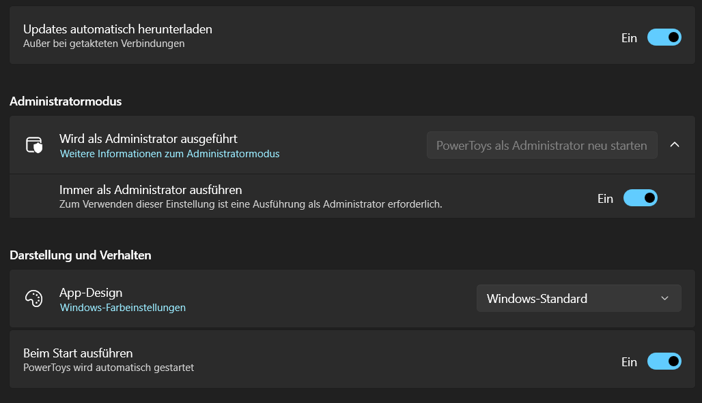
Ganz unten siehst du eine relativ neue Funktion: Das Sichern und Wiederherstellen von Einstellungen. Damit kannst du bei Neuinstallationen oder bei Installationen auf anderen Windows-Computern die Einstellungen übernehmen. Das ist hilfreich, da es mittlerweile 18 Tools gibt und für die einzelnen Tools noch einmal verschiedene Einstellungen vorgenommen werden können. So kann man die PowerToys ganz nach seinen Wünschen konfigurieren und muss keine Angst haben, dass die Einstellungen verloren gehen. Voraussetzung ist nur, dass man die Sicherungsdatei, die standardmäßig im Ordner ../Documents/PowerToys/Backup angelegt wird, besitzt.
Der neue Schnellzugriff
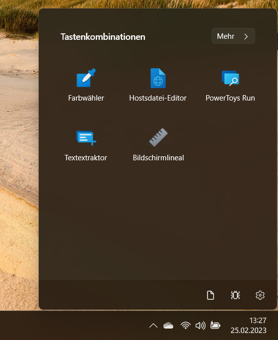Mithilfe des Schnellzugriffs muss man sich die Tastenkombinationen nicht mehr merken und kann die Tools ein- und ausschalten, ohne die Einstellungen zu öffnen.
Immer im Vordergrund: Fokusiert arbeiten
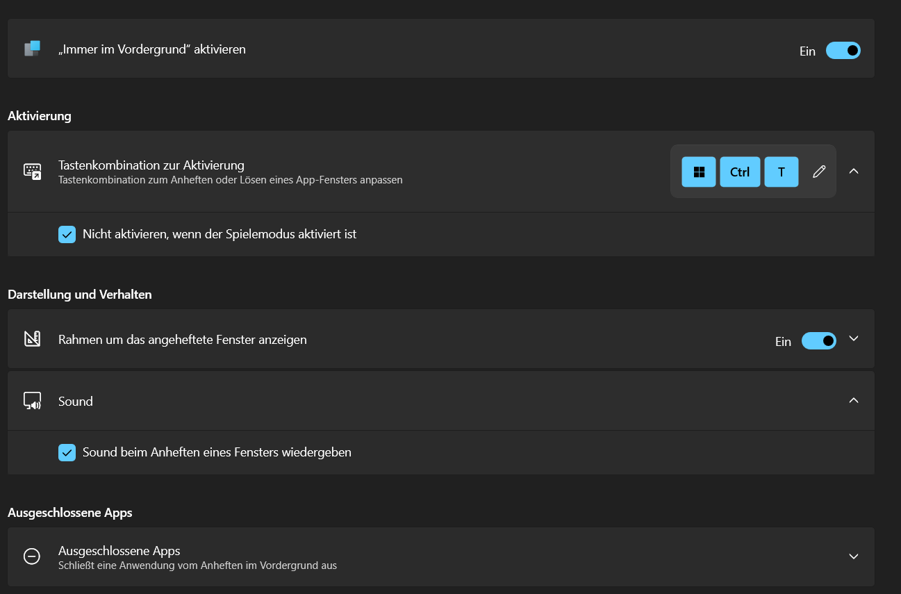Immer im Vordergrund pinnt ein Fenster im Vordergrund an. In den Einstellungen können viele Dinge personaliert werden (bspw. kann der Sound abgeschaltet werden).
Dieses angepinnte Fenster kann man dann auf dem Bildschirm verschieben oder man kann seine Größe ändern. Es bleibt nur immer im Vordergrund, das heißt: Man kann andere Programme anklicken, aber dort wird die Sicht immer vom angepinnten Fenster verdeckt. Die Nutzung erfolgt so:
- Öffne das Fenster, welches fixiert werden soll.
- Drücke die Tastenkombination Strg + Windows + T. Man hört dann einen optional ausschaltbaren Sound und man sieht einen Rahmen um das Fenster.
- Du kannst nun ein anderes Programm anklicken oder öffnen und das fixierte Fenster bleibt im Vordergrund, während das andere geöffnete sich im Hintergrund befindet.
- Willst du die Fixierung lösen, drückst du wieder die Tastenkombination.
Aufwachen: Lasse den Bildschirm eingeschaltet
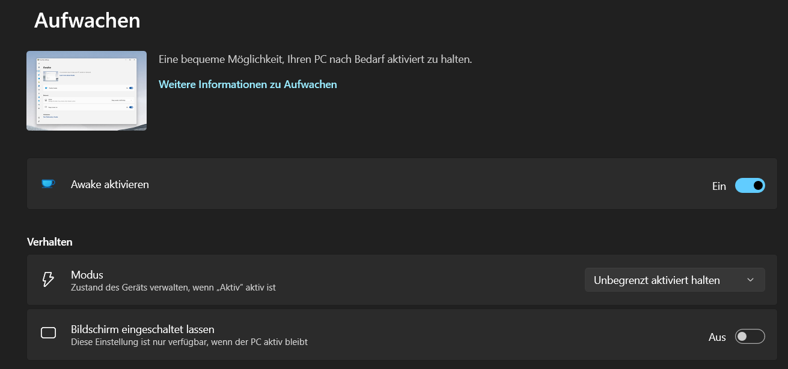Lege selbst fest, wann der Bildschirm ausgeschaltet wird.
- Den ausgewählten Energiesparplan weiterhin verwenden: Es wird weiterhin der Energiesparplan von Windows verwendet. Es ändert sich also nichts.
- Unbegrenzt aktiviert halten: Der Computer wechselt nicht automatisch in den Energiesparmodus. Diese Einstellung gilt bis zur Deaktivierung.
- Vorübergehend aktiviert halten: Der Computer bleibt so lange wach, bis die eingestellte Zeit abgelaufen ist.
- Mode: Hier kann der Modus verändert werden. Es gibt hier aber keine individuellen Zeiten.
- Keep screen on: Der Bildschirm schaltet sich nicht von allein aus (Hinweis: Das Ausschalten des Bildschirms und der Stand-by-Modus sind in Windows 2 verschiedene Dinge)
Farbwähler: Toll für Künster und Entwickler
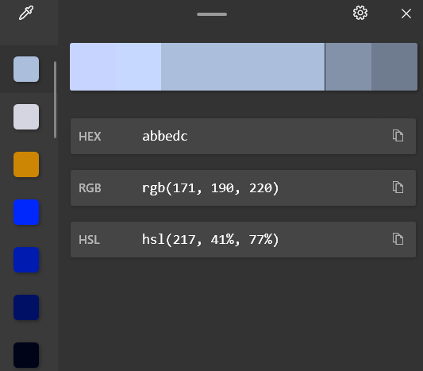Dieses Tool kann von Elementen die Farbe genau bestimmen. Diese Farbe kann man dann in Farbpaletten für Gemälde oder für UIs verwenden.
- Drücke die Tastenkombination Windows + Shift + C.
- An deinem Mauszeiger ist jetzt ein kleines Fenster eingeblendet. Dort sieht man die Farbe und den Code im eingestellten Farbformat. Standardmäßig wird das HEX-Format verwendet, aber eine Umstellung auf RGB oder HSL und viele weiteren Formate (auch selbst erstellte) ist möglich.
- Wenn dir eine Farbe gefällt, mache einen Mausklick.
- Dadurch öffnet sich ein Editor (siehe Bild) und die Farbe in dem eingestellten Farbformat wird in die Zwischenablage gespeichert. Dort siehst du auch weitere Farbformate, die du in den Einstellungen aktivieren oder deaktivieren kannst. Die anderen Farbformate kannst du ebenfalls kopieren.
FancyZones: Multitasking leicht gemacht
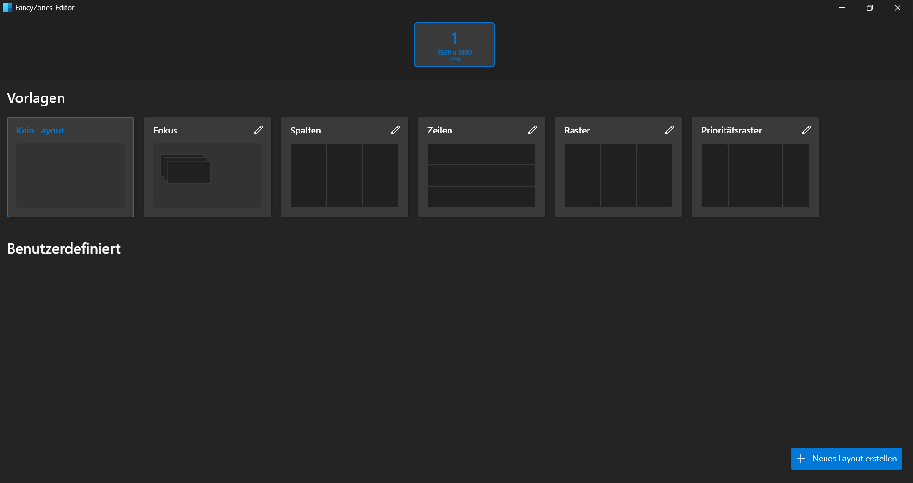Mit dem Layout Manager der FancyZones lassen sich die einzelnen Bereiche des Bildschirms für die Fenster anpassen.
Für die Nutzung kann man einfach ein Fenster verschieben und dabei die Shift-Taste gedrückt halten. Es erscheinen dann die FancyZones und man kann das Fenster in die gewünschte Zone verschieben.
Natürlich ist es auch möglich, eigene Vorlagen zu erstellen oder die schon vorhandenen anzupassen. Dazu geht man in den Einstellungen unter der Rubrik "FancyZones" auf "Layout-Manager starten".
File Locksmith: Kein Problem mehr beim Löschen von Dateien
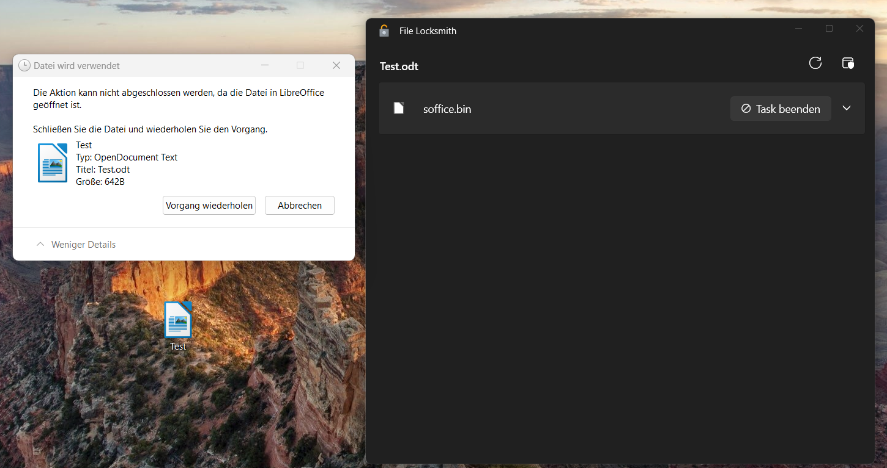Ein nervendes Problem, das jeder kennt: Man kann Dateien nicht löschen, weil sie verwendet werden. Jetzt gibt es dafür Abhilfe.
Wenn man auf das Problem stößt, dass sich eine Datei nicht löschen oder umbenennen lässt, verwendet man von nun an folgende Schrittfolge:
- Mache einen Rechtsklick auf die betroffene Datei.
- Klicke gegenenfalls auf "Weitere Optionen anzeigen". Klicke nun auf "Was sperrt diese Datei?".
- Es öffnet sich nun ein Fenster. Dort siehst du das Programm, welches die Datei sperrt. Du kannst auf diesen Eintrag klicken und siehst ein paar Einträge, welche dich interessieren könnten.
- Hast du daran keine Interesse oder bist du damit fertig, klicke auf den Button "Task beenden". Es ist natürlich auch möglich. den Prozess über den Task-Manager zu beenden.
- Die Datei ist nun wieder freigegeben und lässt sich löschen bzw. umbenennen.
Datei-Explorer-Add-Ons: Dateivorschau leicht gemacht
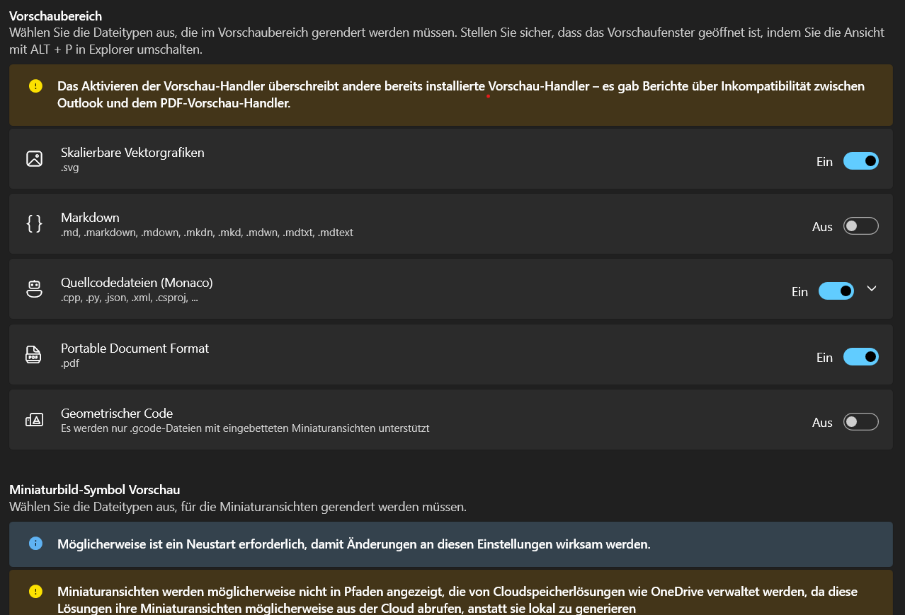Es lassen sich verschiedene Add-Ons aktivieren, womit der Dateiinhalt im Vorschaubereich und in den Thumbnails angezeigt werden kann.
Es lassen sich auch Miniaturansichten für weitere Dateitypen aktivieren. Man hat dies beispielsweise schon bei Bildern, ohne die PowerToys installiert zu haben (man sieht hier das Bild sehr verkleinert als Symbol für die Datei). Um die Miniaturansichten zu sehen, muss man unten rechts im Explorer auf den rechten Button mit dem Text "Zeigt Elemente mit großer Miniaturansicht an. (Strg+Umschalt+2)" klicken.
Hostdatei-Editor: Bequem und einfach die Hostsdatei bearbeiten
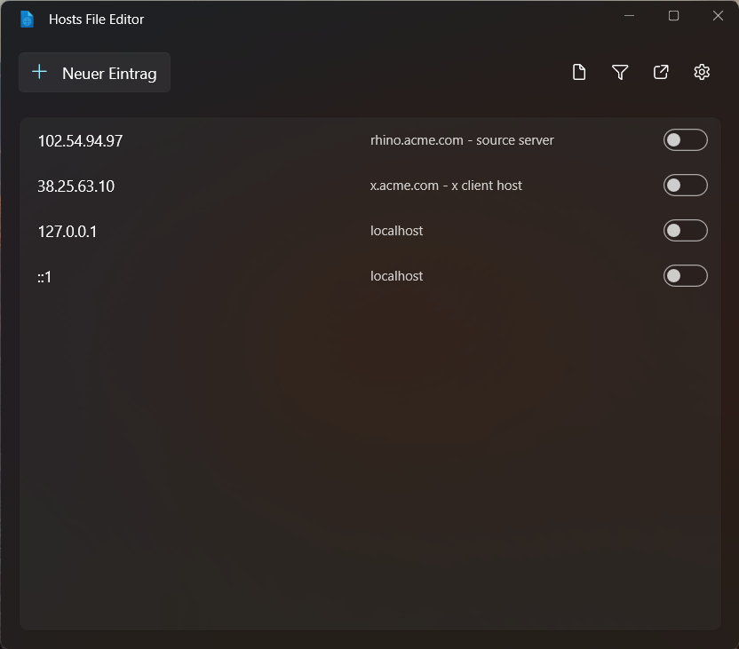So sieht die Hostsdatei in den PowerToys standardmäßig aus.
Damit man die Datei nicht lange suchen muss, hat Microsoft mit der Version 0.64 einen Editor eingebaut, mit welchem man die Datei bearbeiten kann. Das geht wie folgt:
- Klicke in den Einstellungen auf "Hostsdatei-Editor" und dann auf "Hostsdatei-Editor starten".
- Bestätige die Warnung.
- Hier kannst du nun die Einträge aktivieren oder deaktivieren, neue hinzufügen oder löschen. Sei dir aber bewusst, was du tust, denn man kann hier viel Blödsinn anstellen. Am besten, du führst Änderungen nur bei Notwendigkeit durch und lässt sonst alles auf Werkseinstellung (siehe Screenshot).
Bildgrößenänderung: Ganz einfach die Größe von Bilder ändern
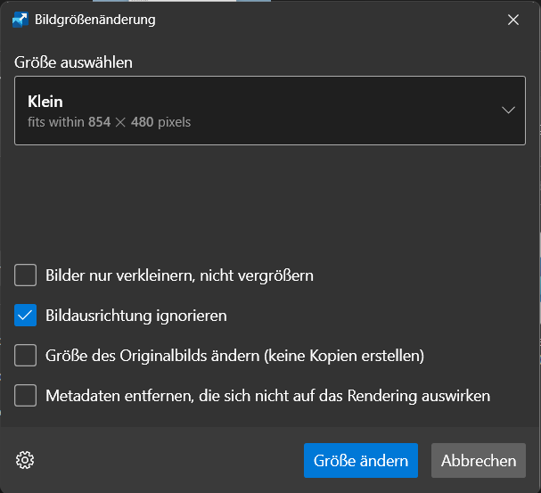Mit diesem Tool ändert man die Größe mehrerer Bilder in einem Rutsch.
Man nutzt das Tool wie folgt:
- Wähle die Bilder aus, von denen du die Größe ändern willst.
- Wähle nun eine Vorgabe aus (die Maße der Vorgabe werden sogar angezeigt) oder gib benutzerdefinierte Maße ein (hier kann man auch andere Einheiten neben Pixel auswählen).
- Klicke dann auf Größe ändern. Es werden dann, wenn nicht anders von dir eingestellt, Kopien angelegt. Diese haben den originalen Dateinamen mit dem Zusatz der ausgewählten Größe, bspw. "(Mittel)".
- Du kannst in den Einstellungen auch die Vorlagen anpassen und weitere anlegen.
- Wenn du die Option "Größe des Originalbilds ändern (keine Kopien erstellen)" auswählst, werden die Originalbilder ersetzt.
Tastatur-Manager: Tastenkombinationen nach den eigenen Wünschen anpassen
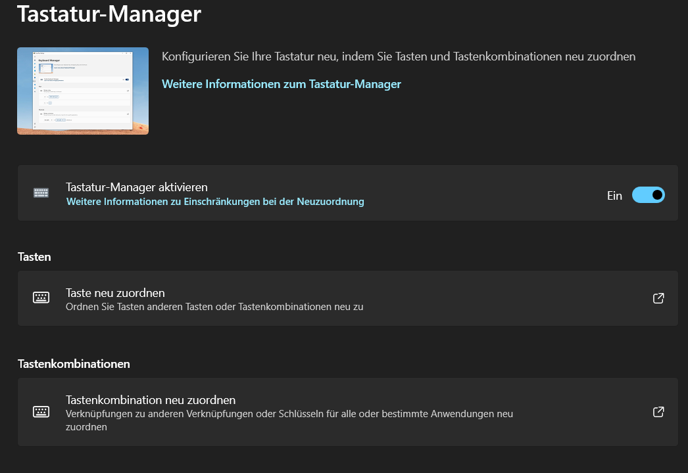Mit diesem Tool kann man die Tastenkombinationen für bestimmte Aktionen ändern.
Mausdientprogramme: 4 hilfreiche Tools
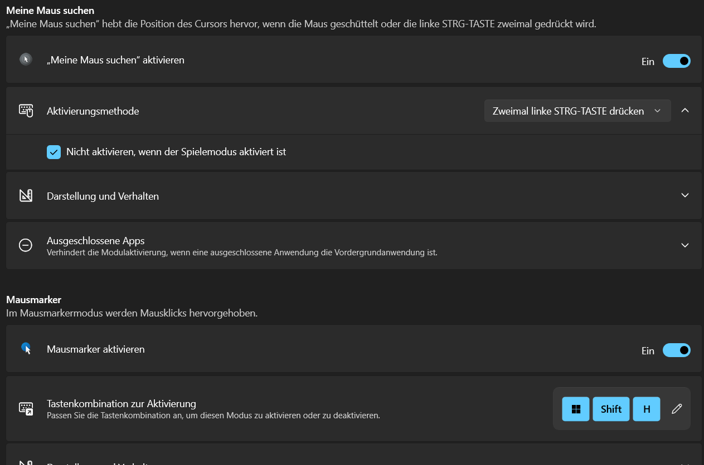Füge deiner Maus Powerfunktionen hinzu.
- Meine Maus suchen: Wenn man seine Maus auf dem Bildschirm sucht, kann man einfach zweimal die Strg-Taste drücken. Es dunkelt sich daraufhin der Bildschirm ab und um die Maus wird ein heller Kreis angezeigt. Dieser Zustand bleibt solange erhalten, bis man mit der Maus einen Klick tätigt, erneut die Strg-Taste drückt oder die Maus bewegt. Apropos Bewegung: Bei Bewegungen der Maus verschiebt sich der helle Bereich mit, vor dem Verschwinden der Hervorhebung.
- Mausmarker: Hilfreich für YoutTube-Videos ist das Tool Mausmarker, welches man mit der Tastenkombination Windows + Shift + H aufrufen kann. Damit wird jeder Mausklick hervorgehoben, indem um die Klickstelle ein gelber Kreis erscheint.
- Maussprung: Wenn man mehrere Bildschirme angeschlossen hat oder allgemein einen großen Bildschirm hat, müsste man mit seiner Maus theoretisch große Bewegungen machen. Dagegen hilft das mit Version 0.68 eingeführte Tool "Maussprung", aufrufbar über die Tastenkombination Windows + Shift + D. Es erscheint dann ein Fenster mit einem verkleinerten Desktop. Dort kann man auf die gewünschte Stelle klicken und der Mauszeiger befindet sich dann an dieser Position. Dabei wird dann auch das Popup-Fenster geschlossen.
- Mauszeiger "Fadenkreuz": Mit der Tastenkombination Strg + Alt + P kann man ein Fadenkreuz um die Maus aktivieren und auch wieder deaktivieren, wo der Mauszeiger den Mittelpunkt darstellt. Das Tool ist für Sehbehinderte und für Leute, die schauen wollen, ob etwas gerade ist (für Grafiker und Programmierer geeignet).
Als Nur-Text einfügen: Nervige Formatierungen in Dokumenten beseitigen
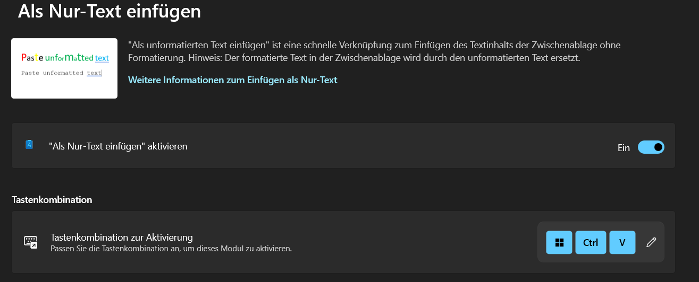Mit diesem Tool kann man unformatierten Text in ein Dokument einfügen.
PowerRename: Mehrere Dateien auf einmal umbenennen
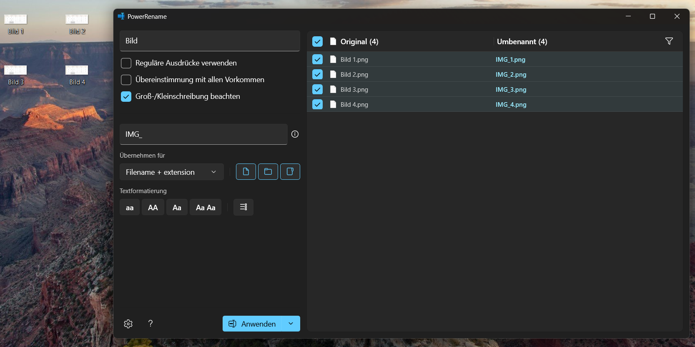PowerRename benennt mehrere Dateien in einem Zug um.
- Wähle die Dateien aus, die du umbenennen willst. Du kannst auch einen Ordner auswählen.
- Mache einen Rechtsklick und klicke auf "PowerRename". Es öffnet sich dann ein Fenster.
- Gib in das obere Feld ein, was du ersetzen willst (im Beispiel "Bild ").
- In das untere Feld gibst du nun ein, durch was das Gesuchte ersetzt werden soll (im Beispiel "IMG_"). Wenn der gesuchte Teil entfernt werden soll, lass das untere Feld frei.
PowerToys Run: Schnell Aktionen starten
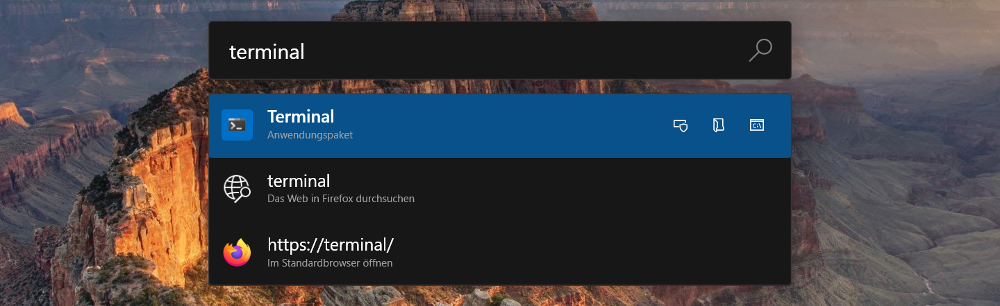Mit diesem Tool kann man nicht nur Programme starten, sondern auch noch andere Aktionen ausführen.
Schnelle Akzentuierung: Ganz einfach Akzentzeichen einfügen
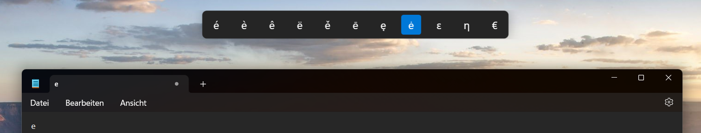Dieses Tool erlaubt das schnelle Schreiben von Akzenten, ohne dass man danach im Internet suchen muss.
- Drücke in einem beliebigen Textfeld den gewünschten Buchstabe und gleichzeitig die Aktivierungstaste. Das ist standardmäßig Links, Rechts oder die Leertaste.
- Halte die Buchstaben-Taste gedrückt. Mit der gedrückten Aktivierungstaste kannst du nun das entsprechende Akzentzeichen auswählen. Wenn du das gewünschte Zeichen ausgewählt hast, lasse die Buchstaben-Taste los.
Registrierungsvorschau: Registry-Dateien einfach anzeigen und bearbeiten
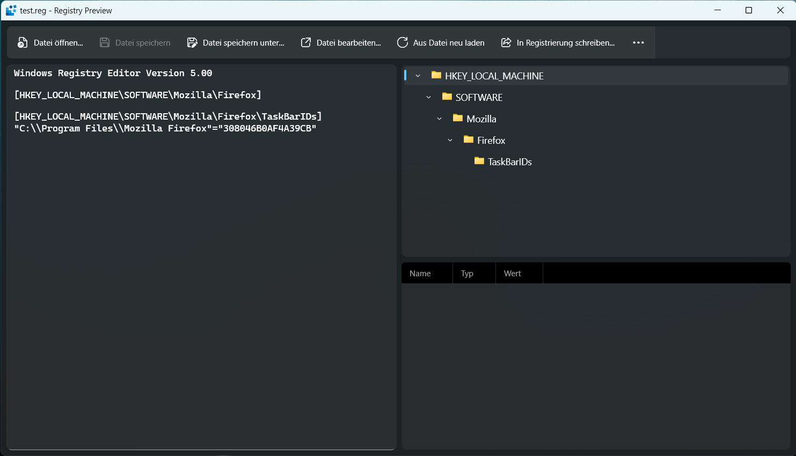So könnte es aussehen, wenn man eine .reg-Datei mit dem Tool öffnet.
- Mache einen Rechtsklick auf die .reg-Datei.
- Klicke ggf. auf "Weitere Optionen anzeigen". Klicke dann auf "Vorschau". Bei dem entsprechenden Eintrag befindet sich auch das Tool-Icon.
- Nun kannst du die Datei bearbeiten. Ebenso siehst du den Schlüsselpfad und alle darin enthaltenen Werte.
Bildschirmlineal: Ganz einfach Elemente ausmessen
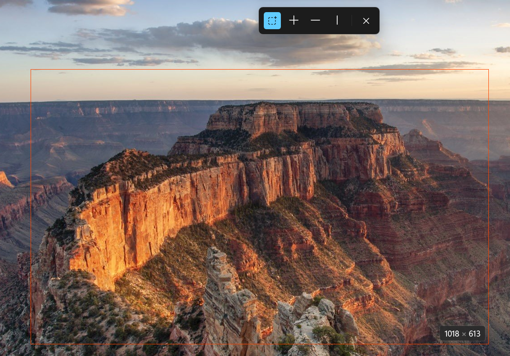Hier wurde ein Bereich gezeichnet und man sieht die entsprechenden Maße. Damit können ganz einfach Bilder vermessen werden.
- Bounds (Auswahlmodus): Nach einem Klick darauf kannst du einen rechteckigen Bereich zeichen und siehst dessen Maße in Pixeln.
- Spacing (Fadenkreuz): Damit misst man gleichzeitig horizontale und vertikale Abstände.
- Horizontal spacing (horizontaler Abstand): Damit misst man den horizontalen Abstand.
- Vertical spacing (vertikaler Abstand): Damit kann man den vertikalen Abstand messen.
Wenn ein Wert angezeigt wird und man dann einen Mausklick tätigt, werden die Maße in die Zwischenablage kopiert.
Tastenkombinationsübersicht: Alle Windows-Tastenkombinationen anzeigen
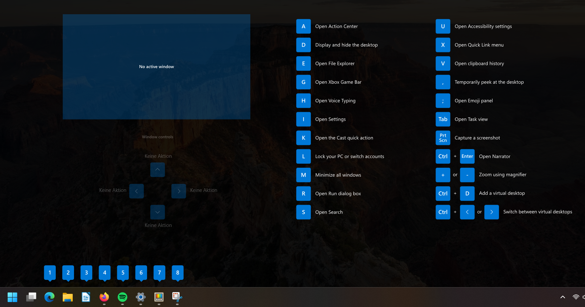Mit diesem Tool kannst du einige Tastenkombinationen mit der Windows-Taste anzeigen lassen.
- Standardmäßig ist das Windows + Shift + #. Schließen kann man das dann erscheinende Fenster über Esc. Ob diese Option aktiviert ist, wenn im Bereich "Tastenkombination" unter "Aktivierungsmethode" die Option "Angepasste Tastenkombination" ausgewählt ist.
- Sehr praktisch ist es jedoch, die Option "Windows-Taste gedrückt halten" auswählen. Dabei muss man die Windows-Taste länger gedrückt halten. Das Fenster verschwindet, wenn man die Windows-Taste wieder loslässt. Diese Option ist dahingehend interessant, dass man dann einfach eine Übersicht mit den Tastenkombinationen sieht, wenn man die Windows-Taste drückt und einem die weiteren Tasten nicht einfallen.
Textextraktor: Text von beliebiger Stelle kopieren
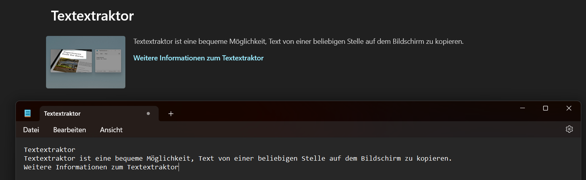Mithilfe des Textextraktors wurde der Beschreibungstext aus den Einstellungen kopiert und eingefügt.
- Drücke die Tastenkombination Windows + Shift + T. Daraufhin verdunkelt sich der Bildschirm und die Maus verwandelt sich in ein Fadenkreuz.
- Ziehe nun einen Rahmen um den zu kopierenden Text und lasse dann los. Der Text wird dann in die Zwischenablage kopiert.
- Öffne beispielsweise den Editor wie im Screenshot und füge den Text über Strg + V ein.
Videokonferenz-Stummschaltung: Mikrofon und Kamera per Tastenkombination systemweit stummschalten
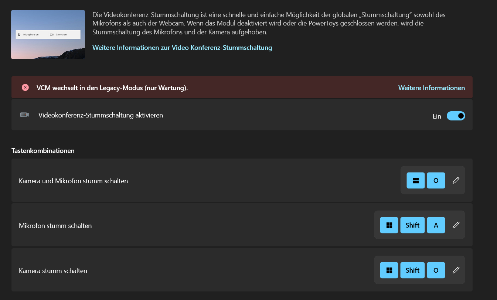Die PowerToys erlauben es, die Kamera und das Mikrofon per Tastenkombination stummzuschalten.
- Windows + O: Kamera und Mikrofon stummschalten
- Windows + Shift + A: Mikrofon stummschalten
- Windows + Shift + O: Kamera stummschalten